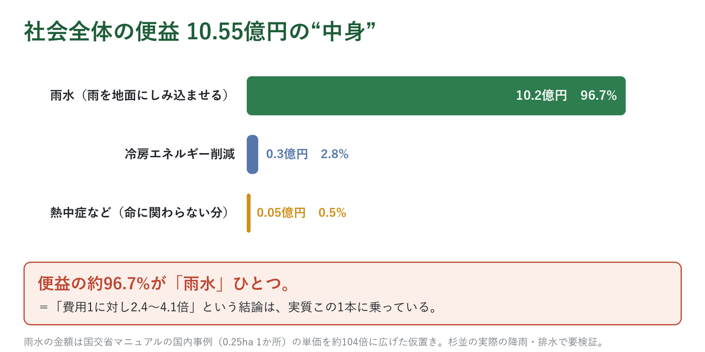
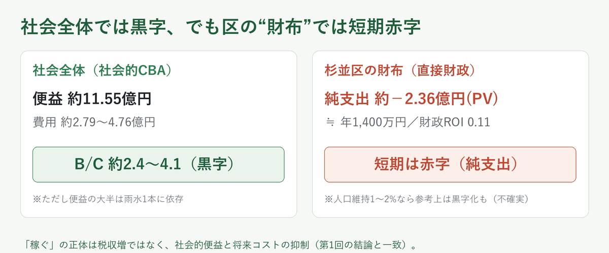
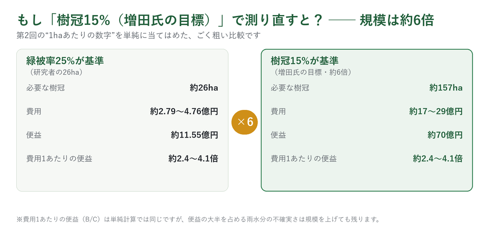
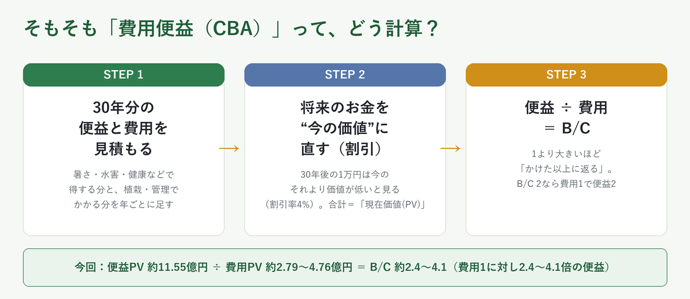
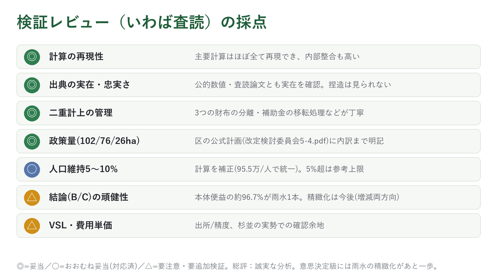

第1回の宿題は「杉並は緑で実際に稼げるのか」。これに本格的なCBA（費用便益分析）で挑んだ仲間の研究者（匿名）の分析の提供を受けたので、公認会計士の私が、仕事の監査のように点検しました。結論を5分で。
前提：区の公式目標は緑被率25%。公式計画は不足102haを「公共系（公園・緑地）約76ha＋残り約26ha（1棟あたり敷き布団1枚分）」と内訳まで示しています。研究者はその残り約26haを“樹冠（木陰）”で埋めたらどうなるかを試算しています（試算したのは研究者で、私はその結果を点検する立場です）。
① 研究者の答え：社会全体なら黒字
樹冠を26ha増やすと、社会全体の便益は約10.55〜13.50億円（中心11.55億円）、費用は約2.79〜4.76億円。かけた費用1に対して約2.4〜4.1倍の便益が返る、という試算でした（便益も費用も30年分を割引率4%で“今の価値”に直して比べた比率です）。
② でも黒字は「雨水1本」に乗っている
内訳を開けると、便益の約96.7%が「雨水（雨を地面にしみ込ませる）」ひとつ。しかもそれは国交省マニュアルの0.25haの1事例を約104倍に引き伸ばした仮置きの数字（国内の雨水処理費に関する0.25haの事例をもとにした値で、海外値の流用ではありません）。杉並区にこの計算へそのまま使える公的データは見当たらず、研究者も「そのとおり。今後、実績データが取れれば結論は変わりうる」と認めています。杉並区は雨水処理設備が発達している一方、善福寺川などの治水問題も抱えており、便益は増える方向も減る方向もありえます。私が最も留意すべきだと考える点です。

③ 区の「財布」では短期は赤字
社会全体の黒字と、区役所の財布は別物。雨水や健康の便益は社会には返っても区の歳入には直接入らない（地価が上がっても固定資産税は23区では“都の税”）。だから区の財布だけだと約−2.36億円（年1,400万円規模）の純支出です。
ただし中長期では、住環境が良くなり現役世代の定住が進めば区民税の維持でプラスにも転じうる。増田氏は人口減少社会を見据えて短期の損得より中長期で区をデザインする立場で、この「短期赤字でも中長期の投資」という性格とは整合します。

④ 結論（現時点の私の見解）
これは「稼ぐ事業」ではなく、「将来の費用や損失（暑さ・水害・健康の社会的コスト）を減らすための公共投資」として見るなら、やる意味はあります。研究上も、緑化が“個人の所得を増やす”結びつきは弱く、確かなのは行政としての損失抑制のほう。ただし実施するなら、①雨水便益を杉並の実データに差し替え、②維持費を最初から予算化、③家賃上昇など住民保護をセットに、が条件です。
→ 全数値の計算根拠・出典の該当ページ直リンク・ROIの計算前提（何年・割引率）は「詳細版」へ
第1回で書いたとおり、私がこの話を知ったのは、杉並区で活動を続ける増田氏とのかかわりがきっかけでした。経済学者でも都市計画の専門家でもない、ただの一人です。ただし、公認会計士として、作られた計算の結果を検証・チェックする“守り（ディフェンス）”には、それなりに定評があります。だから今回も、正式な査読ではなく、仕事で財務数値を監査する感覚で「この試算は信用していいか」を点検しました。結論を先に言うと、この分析は「誠実なたたき台」として非常によくできている。ただし中心の結論（黒字）が、たった1本の便益に支えられているという、留意すべき点も抱えています。
0. この検証は、何を問うているのか
まず土俵をはっきりさせます。杉並区の公式目標は「緑被率25%」（令和14年度＝2032年まで、平成11年から継続）。現況21.99%（前回 平成29年度21.77%から+0.22pt／令和4年度みどりの実態調査 概要 p.3）で、達成には追加で約102haの緑被地が必要――しかも、その内訳まで区の公式計画に書かれています。
みどりの基本計画 改定検討委員会 資料5-4（p.5）：「緑被率25%達成には約102ha必要。未整備の都市計画公園・緑地で約76ha、その他公共施設分を引いた残り約26haを区内の建物約12万棟で割ると、1棟あたり約2.2㎡（＝敷き布団 約1枚分）」
計算根拠：残り26ha＝必要102ha −公共系76ha。1棟あたり＝26ha（＝260,000㎡）÷ 約12万棟 ≒ 2.2㎡/棟。いずれも資料5-4 p.5に記載の公式数値です。
つまり区の計画は、102haのうち約76haを公共系（公園・緑地）で、残り約26haを民有地で埋める絵を描いています（102ha・76ha・26haはいずれも区の公式数値）。研究者の検証はここから一歩踏み込み――
その「残り約26ha」を“樹冠（木陰）”で埋めたら、いくらかかって、いくら便益が出るのか――を試算する。
【補足】区の目標「緑被率25%」は、木だけでなく草地・農地・屋上の緑なども合わせて数える“緑全般”の割合。一方、増田氏が掲げる「樹冠15%」は、木の枝葉（木陰）だけを数える割合。同じ「みどり」でも測っているものが違う別の物差しです（第1回参照）。今回の26haは、緑全般の穴を“樹冠”で埋める発想で、ちょうど両者の橋渡しの位置づけになります。
一般に研究される便益・費用と、今回“数えたもの／数えなかったもの”
研究者は便益10分類・費用14分類を整理したうえで、過大評価を避けて金額化するものをかなり絞り込んでいました。
樹冠政策の便益・費用と、今回の検証の範囲
――何を“数えた”か／何を“数えなかった”か
●金額化して本体に算入
◐一部・別枠・感度のみ
○KPI止まり／未計上
✕中心ケースから除外
便益（一般に研究される10分類）
- ●雨水流出抑制（本体の中心）
- ◐暑熱緩和・健康（下限のみ本体）
- ●冷房エネルギー削減（小）
- ◐景観・心理的快適性（拡張に50%）
- ○大気質改善
- ○炭素固定・排出削減
- ○不動産・住環境価値（別枠）
- ○歩行・外出の促進
- ○生物多様性・環境教育
- ○地域コミュニティ形成
費用（主な分類）
- ●植樹・植栽整備費
- ●維持管理費（剪定・灌水・清掃）
- ◐設計・更新・根上がり・事故等
- ◐行政運営・制度管理（一括15%）
- ✕用地取得費（市場価格で買うと数百億円→試算が崩れる）
- ◐民有地補助（社会では“移転”）
- ○住民の未補助負担
- ○交通・駐車の機会費用
今回 金額化して本体に入れたのは、便益では実質「雨水・冷房・熱中症の一部」の3つだけ。残りは過大評価を避けてKPIや別枠に。費用は初期整備・維持管理が中心で、用地取得は中心ケースから除外。出典：研究者の分析パッケージ（便益10分類・費用14分類）を筆者要約。
金額化して本体に入れたのは実質3つ（雨水・冷房・熱中症の一部）だけ。大気・生物多様性・景観・歩行・住環境価値などは「重要だがエビデンス不十分」として参考指標止まり、死亡を防ぐ便益も限定的です。そのぶん便益は控えめですが、研究者が強調するように「全体として保守的」とまでは言い切れません。費用側にも枯れた木の植え替えや根の補修など未確定の出費がありうるからです。
もし増田氏の「樹冠15%」で測り直すと？
今回の26haは「緑被率25%」基準。増田氏が掲げる樹冠15%（現状10.4%。第1回のとおり世界の主要都市は30〜40%目標で、15%はその控えめな“第一歩”）を直接の目標にすると、区全体で+4.6pt＝約157haの樹冠が必要（第1回試算）＝26haの約6倍。研究者の1haあたりの数字を単純に当てはめて計算するとこうなります。

ただし「6倍すれば済む」という単純な話ではありません。便益の96.7%は雨水便益1本に依存しており、その金額は1か所の事例をもとにした単純な計算構造です。実際に政策を実行に移すには、グレーインフラ（既存の下水道・調節池）の実態などを考慮し、費用と便益をより正確に計測し直す必要があります。規模を6倍にすれば、この計測の必要性はいっそう大きくなります。植える木も、157haを1本あたりの樹冠（成木で50〜100㎡）で割るとおおよそ2〜3万本規模となり、密集市街地での用地・管理の難度は、26haの場合より格段に高くなります。
1. まず、研究者の「最終成果物」を見る
冒頭に、研究者の図解版ページ（index.html）をそのまま埋め込みました。シナリオの根拠・便益・費用・財政を分けた5本の資料と自己検証サマリーまで揃った本格的なものです。要約スライドが上の図。掲げる数字は――
- 追加する樹冠：26ha
- 社会全体の便益：約10.55〜13.50億円（中心11.55億円。30年分を“今の価値”に直した額）
- 費用：約2.79〜4.76億円
- 費用1に対して約2.4〜4.1倍の便益（専門用語で「費用便益比（B/C）」）
計算根拠：便益の幅は便益セットの取り方（狭義10.55／死亡回避下限込み11.55／拡張13.50億円）、費用の幅は中心2.79〜標準4.76億円。B/Cは政策判断用便益11.55億円を費用で割って 11.55 ÷ 4.76 ≒ 2.4（保守側） 〜 11.55 ÷ 2.79 ≒ 4.1（中心費用）。すべて30年・4%の現在価値。各数値の積み上げは研究者の便益・費用メモに記載（本記事末尾の出典欄）。
数字だけ見ると「やはり緑には採算が合う」と思えます。でも――この研究者は、どんな立場でも数字を中立に見ることを信条にしている人。だからこそ私も、結果をそのまま受け取らず点検しようと思えました。実際この分析は「3つの財布」をきっちり分けています。
2. 大事な前提 —「3つの財布」を混ぜない
- 社会全体の損得（区民・来街者・事業者・行政をぜんぶ合わせた費用と便益）→ 政策として理にかなうか
- 杉並区役所の財布（区の歳出・歳入・歳出削減）→ 区の予算でやれるか
- 住民個人の財布（維持管理、家賃・地価、落葉清掃）→ 公平性・副作用
「社会全体で黒字」と「区役所の財布が潤う」はまったく別の話。この分析は最初にそれを宣言し、最後までブレずに分けていました。ここを混ぜるのが、こういう試算でいちばんありがちな失敗です。
3. どうやって「稼げるか」を出したのか
- 政策量を決める：公式の約102ha＝公共系約76ha＋残り約26ha。その26haを対象に置く。
- 便益を金額化：雨水・暑熱健康・冷房・景観を、過大評価を避けて控えめに。
- 費用を積む：植樹・維持・予備費を、土地を買わない前提で。
- 費用と便益をくらべる。
- 区の財布で見直す：社会便益は区の歳入に直接入らない→区単独だと短期赤字。人口維持は「参考」へ。
ところで、この「費用便益（CBA）／ROI」の計算、何年で・どう出しているのかを先に押さえておきます。初見でも読めるように、前提だけ図にまとめました。

この試算の計算前提 ―「何年で・どう出した数字か」
CBA（費用便益分析）・B/C・ROI は、すべて下の前提で計算されています
① 計算期間
30年
毎年の便益・費用を30年分積み上げる
② 割引率（将来のお金を“今”に直す率）
社会の便益・費用＝年4%
区民税の参考＝年2.5%
③ 現在価値（PV）への換算係数
17.292
毎年1円の便益は、30年・4%なら今の価値で17.3円分
④ 費用便益比（B/C）と ROI
B/C＝便益PV÷費用PV
財政ROI＝区に戻るPV÷区負担PV
なぜ割り引くの？ 「来年の1万円」は「今の1万円」より価値が低い（待つコスト・利息分）。だから将来30年分のお金を“今の価値”に縮めて合計します。これが現在価値（PV）です。
具体例：毎年1億円の便益が30年続くなら、単純合計は30億円。でも“今の価値”では 1億円 × 17.292 ＝ 約17.3億円 と評価します。
※ 換算係数17.292 ＝ (1 − 1.04−30) ÷ 0.04。割引率4%は国土交通省が公共事業評価で用いてきた水準（費用便益分析技術指針）。研究者は「将来は2%の低率も併記したい」としています。
この一つひとつを、第1回の一次資料・査読論文と突き合わせて点検した結果が次の採点表です。

4. ◎ 評価できた点 —「数字」と「作法」は信頼できる
4-1. 計算は再現できる
主要計算を電卓で入れ直してもほぼ全て原文どおり再現。将来の便益を“今の価値”に直す係数（30年・割引率4%で17.292）も、各表の全セルも整合。ごまかしや転記ミスは見つかりませんでした。
4-2. 出典が実在し、忠実
4-3.「足さない」勇気がある
良い費用便益分析は「何を足さないか」で品質が決まります。この分析は――市場価格での土地取得を中心から外す（買えば数百億円で試算は崩れると自己開示）／固定資産税を区の歳入にしない（23区では都税。第1回と同じ整理で正確）／補助金を二重計上しない（税金の“移し替え”で資源消費ではない）／地価・大気・炭素・歩行・生物多様性をあえて金額にせず参考指標止まり／死亡を防ぐ便益を下限・中心・高位に分け、大きな数字で結論を決めない――と、便益をむしろ控えめに積んでいました。
5. △ 要注意の点 — 結論の「黒字」はどこまで確かか
5-1.【最重要】黒字は、ほぼ「雨水1本」に乗っている
社会全体の便益10.55億円の内訳を見ると――
「費用1に対して2.4〜4.1倍」という中心の結論は実質的に雨水便益1本に全面的に依存しています。その雨水便益は、国土交通省「グリーンインフラ活用型都市構築支援事業（費用対効果分析手法マニュアル）p.23〜24」の0.25ha・1か所の計算例（A市k公園。雨水を年1,303m³減らし、1m³あたり処理費436円を掛けて年約568千円＝約57万円）を、1haあたりに換算して26haに広げた＝約104倍に引き伸ばしたものです。「整備前はほぼ全面舗装→整備後はよくしみ込む」という強い前提が26ha全域で一律に成り立つとし、下水道・河川の受け止め容量の上限も見ていないため金額が大きめに出やすい。研究者自身も「杉並区・東京都下水道の実処理費・実浸水被害額に置き換える必要がある」と注記。ここを杉並区の実データに差し替えると、結論が動く可能性があります。
計算根拠（雨水10.2億円）：568千円 ÷ 0.25ha ＝ 2.272百万円/ha・年 → 30年・4%PVに × 17.292 ＝ 39.3百万円/ha → × 26ha ＝ 約10.2億円。「104倍」は対象面積の比 26ha ÷ 0.25ha ＝ 104。元の単価は国交省マニュアル p.24 の実在値。
一点はっきりさせると、この単価は国交省マニュアルの国内の雨水処理費に関する0.25haの事例に基づく値で、海外の値を流用したわけではありません（前提は日本向け）。問題は海外か国内かではなく、たった1か所(0.25ha)を約104倍に広げている点です。そして杉並区には、この計算にそのまま使える公的データが見当たりません。研究者に確認したところ「そのとおり。杉並区の具体の降雨予測・処理能力・浸水影響は織り込んでおらず、今後、実績データが取れた時点で結論が変わる可能性がある」との回答でした。なお杉並区は、地下に神田川・環状七号線地下調節池（54万m³）など強力なグレーインフラ（コンクリート製の下水道・調節池などの設備）を備える一方、善福寺川などの治水問題（過去の浸水被害）も抱えています。だから、近年の豪雨増で便益が増える方向も、既存設備が受け止めて小さくなる方向も、どちらもありえます。いずれにせよ、便益の96.7%を占めるこの1本は、実装前に杉並区の実データで確かめるのが筋――私が最も留意すべきだと考える点です。
5-2. 政策量（26ha・76ha）は、公式の裏づけがある
この「102ha − 76ha = 26ha」は研究者が勝手に作った数字ではなく、「0. この検証は、何を問うているのか」で示したとおり区の改定検討委員会資料（5-4.pdf）に内訳まで公式に明記されています。政策量の根拠はむしろ堅い。研究者は公式の26haを忠実に使っています。
5-3.「死亡を防ぐ価値」と費用単価は“仮置き”
- 死亡を1件防ぐ価値（統計的生命価値）を約2.46億円と設定。内閣府・国交省が使う水準（約2.3億円）に近く、日本の統計的生命価値メタ分析が示す中央値2〜6億円の“低め”。便益を大きく見せない控えめな設定です。計算根拠（死亡回避 下限1.0億円）：追加樹冠率0.763pt（26ha÷3,406ha）× 0.013℃/pt ＝ 約0.0099℃ の気温低下 → 12.34人/年 × 0.0099℃ ÷ 5℃ ＝ 約0.024人/年 回避 → × 2.457億円 × 17.292 ＝ 約1.0億円（中心ケースの本体には下限のみ算入）。
- 費用の単価（植える初期費・毎年の手入れ費・予備費15%）は杉並区の実際の入札価格で確かめた数字ではなく“仮置き”。枯れた木の植え替えや根の補修を予備費15%にまとめているため、費用はやや小さめに出やすい。
- 将来の便益を“今の価値”に直す割引率は4%だけで計算（上の図解参照）。研究者も「2%も併記したい」と書くが未実施。
5-4.「人口が維持できれば区税が増える」は、計算の誤りを直して読む
区の財布の参考分析で、「住環境が良くなれば現役世代の転出が減り、特別区民税（住民税のうち区の税収になる部分）が維持される」という感度が置かれています。ただ点検すると計算に誤りがあり、税収増が大きく出すぎていました（5%・10%が、1〜2%と同じ計算なら本来の1.5〜2倍に膨張）。研究者にも確認のうえ適切な数値に直した結果がこちらです。
| 人口維持の度合い | 維持人数 | 区民税の増加（今の価値） | 区の戻り具合 | 区の差し引き |
|---|
| 0%（本体） | 0人 | 0億円 | 0.11 | −2.36億円 |
| 1% | 約356人 | 約3.4億円 | 約1.39 | 約+1.04億円 |
| 2% | 約712人 | 約6.8億円 | 約2.67 | 約+4.44億円 |
| 5%（参考） | 約1,780人 | 約17.0億円（誤り→修正前25.5） | 約6.5 | 約+14.6億円 |
| 10%（参考上限） | 約3,560人 | 約34.0億円（誤り→修正前67.9） | 約12.9 | 約+31.6億円 |
区民税の額は「維持された現役世代1人あたり、年10万円の区民税を、30年・割引2.5%で“今の価値”に直すと約95.5万円」という研究者の前提から計算。最終的な費用便益の結論は1〜2%で計算しており、5〜10%はあくまで参考。だからこの修正は結論には影響しません。
6. では、区の「財布」では稼げるのか — 短期は、はっきり赤字
「社会全体の損得（区民・事業者・行政すべての合計）」では黒字でも、杉並区役所の財布では様子が変わります。雨水・暑さ・健康の便益の多くは社会には返っても区の歳入には直接入らないから。地価が上がっても固定資産税は23区では区でなく都の税で、区の財布には直接入りません。だから社会全体は黒字でも区単独では赤字になりうるのです。
研究者の試算では、外部財源・民間負担を3割見込んでも、区の直接財政は約−2.36億円（今の価値）の純支出。年あたり約1,400万円/年。区有施設の冷房費削減で取り戻せるのは投資の約11%だけ。つまり「みどりで（区が）稼ぐ」は短期の税収では成り立たない。第1回の結論（「みどりで稼ぐ」＝税収増ではなく将来の出費を抑える投資）と一致します。
計算根拠（区財政）：純支出 冷房費削減0.30億円 − 区負担2.66億円 ＝ −2.36億円（標準ケース：総費用3.80億円のうち外部財源・民間負担30%＝1.14億円を差し引いた区負担2.66億円）。年額 2.36億円 ÷ 17.292 ≒ 0.14億円＝約1,400万円/年。財政回収率（ROI）0.30億円 ÷ 2.66億円 ≒ 0.11。冷房費削減0.30億円は 区立施設電力42,280,305kWh × 冷房20% × 削減3% × 30円 ＝ 約7.6百万円/年 を102ha規模PV(約1.3億円)に直し、26ha分に按分(×26÷102)した値。出典：研究者 fiscal_impact_analysis.md。
では中長期は――住環境が良くなり現役世代の定住が進めば、特別区民税の維持を通じて中長期にはプラスへ転じうる（参考の1〜2%）。ここで大事なのは、増田氏が「人口減少社会を見据えて杉並区をデザインする」立場で、短期の損得より中長期で考えること。この「短期は赤字でも中長期に効く投資」という性格とは整合的です（研究者は人口維持の因果は不確実として参考扱い。私も妥当だと思います）。加えて、便益の柱である雨水について杉並に当てはまる実データが今あるわけではありません。実施するなら、杉並の降雨・排水・浸水のデータを取ったうえで費用便益を検討し直す必要があります。
7. 見落としてはいけない「副作用」
緑化で住環境が良くなると地価・家賃が上がり、もともと住んでいた人（とくに賃貸・低所得世帯）が住み続けにくくなる――「グリーン・ジェントリフィケーション」。研究者はAnguelovski ほか 2022（欧米28都市中17都市で関係）やQuinton ほか 2022を正確に引き、「人口維持効果を強く断定してはいけない／家賃上昇・転出を監視すべき」と結論。第1回の整理（住民を守る手立てを行政が別途用意すべき）と完全に重なります。
8. 結論 — 私の「現時点」での見解
Q. 杉並は緑で「稼げる」のか？
- 区の財布（税収）で短期に稼ぐ政策ではない（短期は純支出・年1,400万円規模）。
- 社会全体なら「元は取れる」可能性が高い（費用1に対し2.4〜4.1倍）。ただし黒字は雨水1本に96.7%依存しており、杉並の実データで裏を取るまでは“暫定的な黒字”（その実データは今ないので実施前に取得が必要）。
Q. では、行政として実施する意味は？（現時点の私の見解）
「稼ぐ事業」としてではなく、「管理できる負担で、暑さ・水害・健康・住環境の便益を買う公共投資」として見るなら、意味はある。
理由は3つ。①負担が管理可能（用地を買わず既存改修に組み込めば年1,400万円規模。区の一般会計は年2千億円超で、その規模から見て十分に判断可能）。②便益の方向性は第1回で確認済み（樹冠30%で−1.5℃などを研究者は控えめに計上）。③緑被率25%は区自身の公式目標。
ただし「やる意味がある」と「いますぐ予算を正当化できる」は別。実施するなら宿題を片づけることが条件です。
✅ 雨水便益を杉並区・東京都下水道の実データに差し替える（結論である黒字の確かさを検証。最優先）
✅ 費用単価を杉並の実勢で1点でも検証（26ha・76ha・102haは公式値なのでそのまま使える）
✅ 維持管理費を初年度から予算化
✅ 家賃・転出入を監視し、住民を守る手立てをセットに
最後に。2回かけて公的データと査読論文、研究者の本格試算まで突き合わせた、いまの私の見解です。
「みどりで稼ぐ」とは、正確には「みどりで“将来の損失を減らし、選ばれ続けるまちを保つ”賢い投資」。区が短期に儲ける話ではないが、誠実に設計すれば、やる価値のある公共投資になりうる。
じつは研究をたどると、緑化が“個人の所得を増やす”という直接の結びつきは弱いのが正直なところ（緑が住宅価格に反映される研究はありますが、当の研究者も「樹木は価格上昇要因のごく一部」と限定）。むしろ確かなのは、行政として将来の費用や損失――暑さ・水害・健康にかかる社会的コスト――を減らす効果のほう。だからこの政策は、個人が儲かる話ではなく、行政が将来の損失を抑えるための施策と捉えるのが正確です。投票の判断は、この強さと弱さの両方を見て、ぜひご自身で。
この記事で確認・検証したこと
- 一次資料：研究者の分析パッケージ（README／scenario_evidence／social_cba_benefits／social_cba_costs／fiscal_impact_analysis／index.html／自己検証サマリー）を全文通読。
- 再現：主要計算（現在価値の係数17.292、雨水・冷房・健康・費用・費用便益比・人口維持感度）を独立に再計算し整合を確認。
- 出典照合：公式数値（杉並区・国交省）と査読論文の実在・内容を確認。捏造は見つからなかった。
- 限界：本記事は正式な学術査読ではなく、公開情報に基づく点検（公認会計士としての検証・チェックの感覚で、なるべく客観的に）。雨水便益の実データ差し替えなど未確認の感度は残る。
用語メモ：現在価値（PV）＝将来のお金を“今の価値”に割り引いて合計した額／費用便益比（B/C）＝便益÷費用。1より大きいほど「かけた以上に返る」／メタ分析＝複数の研究を統合した分析／グレーインフラ＝コンクリート製の下水道・調節池などの設備。
おもな出典（数値の該当ページつき）
公的資料は、本文の数値が載っている該当ページに直接飛ぶリンクを付けています（PDFはページ指定。ブラウザにより冒頭から開く場合は記載ページをご参照ください）。
- 匿名研究者「杉並区樹冠率向上政策 26haシナリオ分析」（本記事冒頭に埋め込み／便益・費用・財政の計算ロジック全文） — researcher/index.html
- 杉並区「みどりの基本計画 改定検討委員会 資料5-4」＝緑被率25%・現況21.99%・追加102ha・公共系76ha・残り26ha・1棟2.2㎡ — PDF p.5
- 杉並区「令和4年度みどりの実態調査報告書 概要」＝緑被率21.99%（前回平成29年度21.77%） — PDF p.3
- 杉並区「同 第5章 樹木調査」＝直径90cm以上の大径木 742本(H29)→666本(R4)、76本減 — PDF p.14
- 杉並区「令和8年 各歳別人口」＝20-64歳人口 382,209人 — オープンデータ
- 杉並区「令和7年度当初予算について」＝一般会計 総額2千億円超 — 杉並区
- 国土交通省「グリーンインフラ活用型都市構築支援事業（費用対効果分析手法マニュアル）」＝A市k公園0.25ha・雨水流出削減1,303m³・単位処理費436円/m³・年便益568千円 — PDF p.23〜24
- 国土交通省「費用便益分析に関する技術指針（共通編）改定」＝社会的割引率4% — mlit.go.jp
- J-STAGE「日本における統計的生命価値のメタ分析」＝VSL中央値2〜6億円 — 論文
- 東京都建設局「調節池・分水路（神田川・環状七号線地下調節池ほか）」 — 東京都建設局
- Anguelovski et al. (2022) Nature Communications＝欧米28都市中17都市で緑化とジェントリフィケーションに正の関係（要旨・Results） — nature.com
- Quinton, Nesbitt & Sax (2022)＝グリーン・ジェントリフィケーション研究の系統的レビュー — PMC
- Siriwardena et al. (2016) Ecological Economics 128＝敷地約30%・郡約38%の樹冠で住宅価格への暗黙価格が最大化、対象地平均樹冠約14%（Abstract） — USFS
- 総務省消防庁「熱中症情報」（搬送データ） — 消防庁
本記事は2026年時点の公開情報・査読論文・提供を受けた分析資料に基づく点検です。公認会計士として、なるべく客観的な立場から検証に努めました。特定の候補・政党を推進または否定する目的のものではありません。検証できなかった点や独自試算は、その旨を明記しています。【連載 全2本・完結】